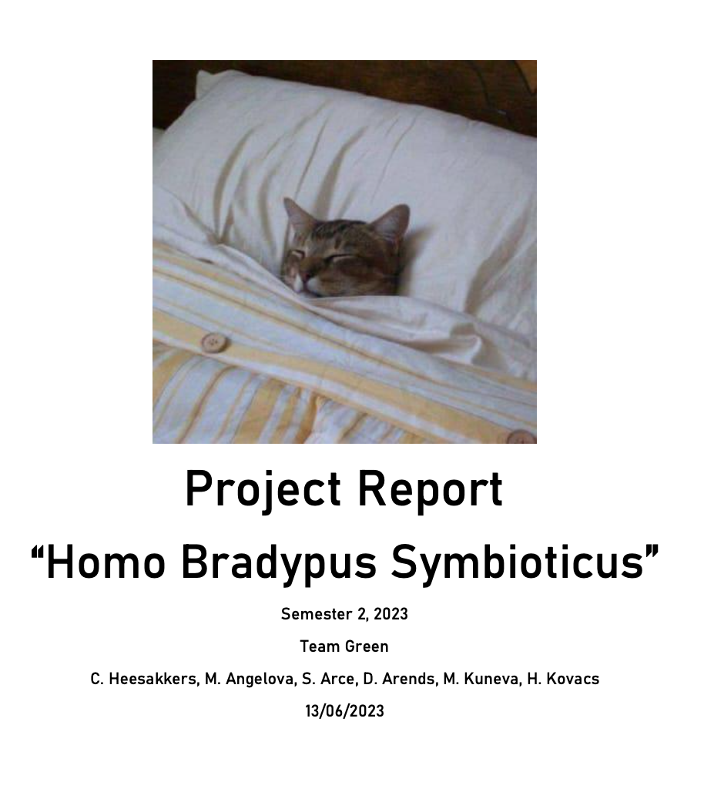
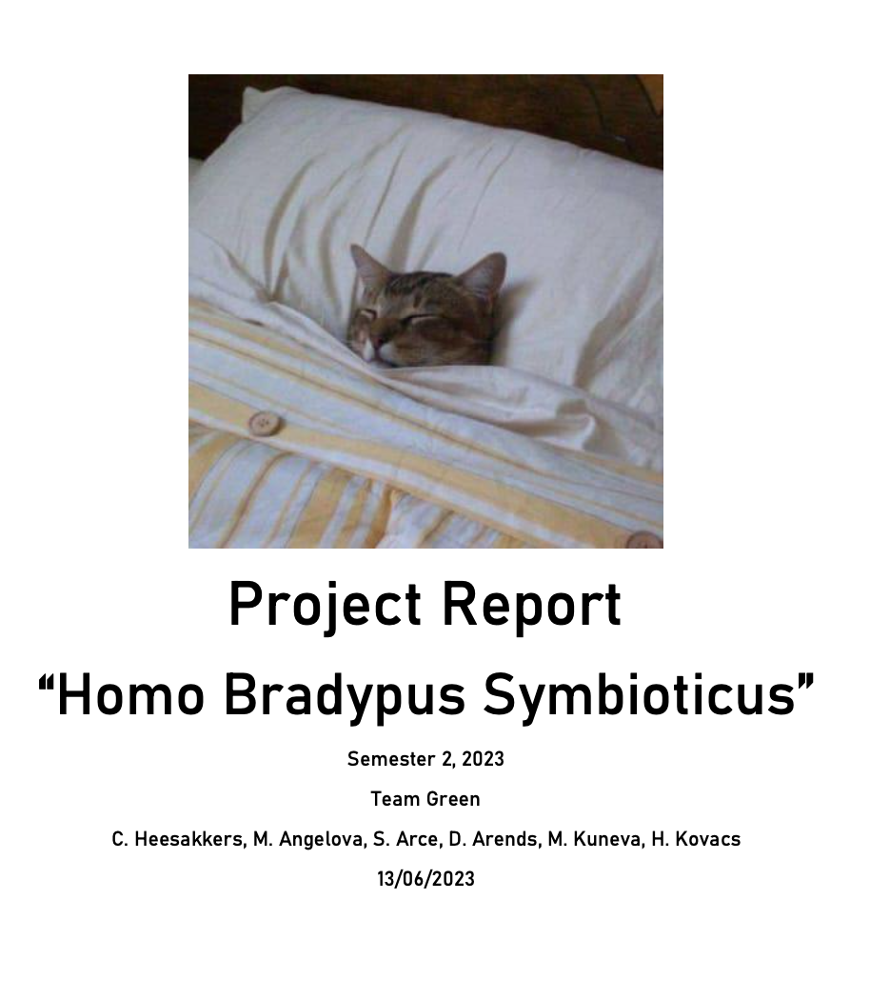

Group Project


 

×
The first thing we made as a group was to come up with agreements. We settled on some agreements, I wrote them all down and after that created the Agreements document itself. This is the final deliverable:
The first thing we made as a group was to come up with agreements. We settled on some agreements, I wrote them all down and after that created the Agreements document itself. This is the final deliverable:
→Agreements document
×
After the Agreemnets document we started creating the Project Plan. I did the automatic table of contents and the risk assessments. Me and Hanga came up with the research questions , we wrote the research methods (I did the first 4 - Competitive Analysis method, Benchmark creation method, Expert Interview, Design Pattern Search) and connect them with the questions. This is the final deliverable:
After the Agreemnets document we started creating the Project Plan. I did the automatic table of contents and the risk assessments. Me and Hanga came up with the research questions , we wrote the research methods (I did the first 4 - Competitive Analysis method, Benchmark creation method, Expert Interview, Design Pattern Search) and connect them with the questions. This is the final deliverable:
→Project Plan
×
After we looked at the interviews with Eleni and her answers to the questions we asked we created our Artist Persona. We based it on Eleni's artistic visions are thoughts, because she mentioned that her main target group is researchers (people interested in her specie and her activities). I worked on the design of the persona - the colors, layout. This is the final deliverable:
After we looked at the interviews with Eleni and her answers to the questions we asked we created our Artist Persona. We based it on Eleni's artistic visions are thoughts, because she mentioned that her main target group is researchers (people interested in her specie and her activities). I worked on the design of the persona - the colors, layout. This is the final deliverable:
→Artist Persona
×
After researching Eleni's specie we found that "bradipus" means sloth. From there we started brainstorming and we came up with our idea of the logo - sloth (representing slowing down) and two people hugging with a chat bubble between them (representing connectivity). After the logo was done we printed it and we separated in pairs and did some user testing. We asked people what they see in the logo iterations. Here are my notes from my research:
After researching Eleni's specie we found that "bradipus" means sloth. From there we started brainstorming and we came up with our idea of the logo - sloth (representing slowing down) and two people hugging with a chat bubble between them (representing connectivity). After the logo was done we printed it and we separated in pairs and did some user testing. We asked people what they see in the logo iterations. Here are my notes from my research:
→My notes - I was showing people the logo without the eyes (second 2 on the photo) of the sloth in both colors. From my part of the research most of the people didn't really recognised the animal and saw only objects. There were a few people that saw panda and only one recognised the sloth right away. This way we eliminated those iterations of the logo and focused on the other two(first 2 on the photo). We looked at everyone's notes from their research and we decided on which logo should we use and what should we change.
→Logo
×
After we were ready with our research we wanted to start prototyping, but we didn't have any idea where to start. Then we decided to create a site map that will be our template for our prototypes. We opened it on the big screen and did it all together. We listened to everyone's ideas and managed to create it pretty fast. This is the final deliverable:
After we were ready with our research we wanted to start prototyping, but we didn't have any idea where to start. Then we decided to create a site map that will be our template for our prototypes. We opened it on the big screen and did it all together. We listened to everyone's ideas and managed to create it pretty fast. This is the final deliverable:
→Site map
×
After our research we decided every member of the group to create their version of the design of the prototype (Main page) for the website based on the research, the interviews with Eleni and her preferences. This is my idea of the prototype. Since she wanted something playful I chose handwritten font (which after an interview with her she didn't like and wanted to keep it more "professional" with less playful font) and for background I draw these lines which represents the connectivity and also add playfulness (the client loved them). I designed the pictures with different shapes, because this was one of her preference and put a little bio section so the users can be introduced to the artist and contact her.
After our research we decided every member of the group to create their version of the design of the prototype (Main page) for the website based on the research, the interviews with Eleni and her preferences. This is my idea of the prototype. Since she wanted something playful I chose handwritten font (which after an interview with her she didn't like and wanted to keep it more "professional" with less playful font) and for background I draw these lines which represents the connectivity and also add playfulness (the client loved them). I designed the pictures with different shapes, because this was one of her preference and put a little bio section so the users can be introduced to the artist and contact her.
→My prototype
×
After we all created our prototypes and had an interview with our client we combined some of the ideas, created a new logo (she didn't like the old one :( ) and designed our current prototype. From my prototype we used the layout, the hamburger menu, the footer, the background with the lines and the bio section with the contact link. On the current prototype I worked on the contact page and the navigation.
After we all created our prototypes and had an interview with our client we combined some of the ideas, created a new logo (she didn't like the old one :( ) and designed our current prototype. From my prototype we used the layout, the hamburger menu, the footer, the background with the lines and the bio section with the contact link. On the current prototype I worked on the contact page and the navigation.
→Current prototype
×
After me, Martina and Hanga finished the prototype, the boys started user-testing. They had feedback for us and we continued to make changes until we satisfied most of the needs of the users. After that me, Hanga and Martina started coding. After we were pretty much done we had another interview with our client so she can test the website. She had some small suggestions for changes that we took for consideration and added to the website. I coded Ergotksio page (with slider for the pictures), which later were used as a template for the other project pages. I worked mostly on the JavaScript of the website (the slider, the navigation). I aslo was assigned as "Gitlab errors solver & Tech Support" so I had to deal with all the merge conflicts and GitLab errors that appeared on the way :) .
After me, Martina and Hanga finished the prototype, the boys started user-testing. They had feedback for us and we continued to make changes until we satisfied most of the needs of the users. After that me, Hanga and Martina started coding. After we were pretty much done we had another interview with our client so she can test the website. She had some small suggestions for changes that we took for consideration and added to the website. I coded Ergotksio page (with slider for the pictures), which later were used as a template for the other project pages. I worked mostly on the JavaScript of the website (the slider, the navigation). I aslo was assigned as "Gitlab errors solver & Tech Support" so I had to deal with all the merge conflicts and GitLab errors that appeared on the way :) .
→Finished website
→Ergotaksio page
→GitLab Repository
×
At the end we started working on the project report so we can document everything we did about this group project. Me and Hanga wrote the "Coding/Implementing" part since we coded the website.